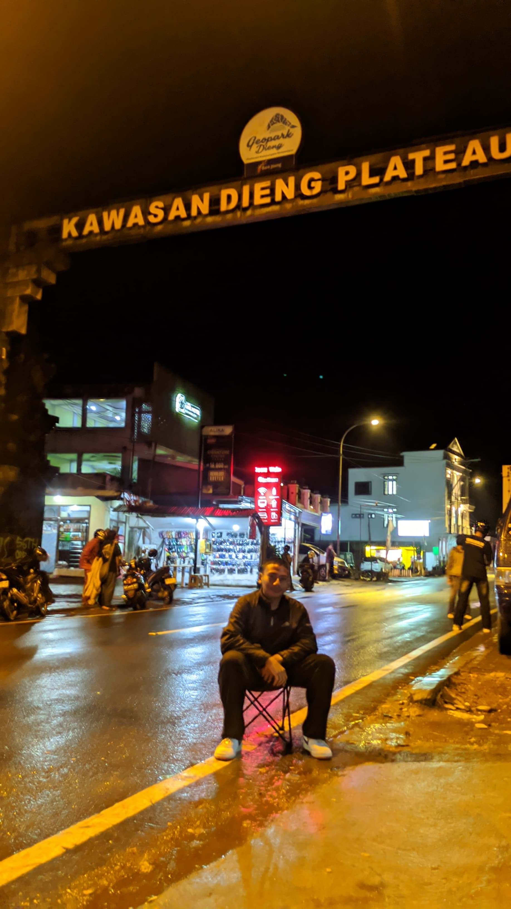

Biodata Diri

| Nama | Evan Fajar Bramantya |
|---|
| Alamat | Sumber Batikan |
|---|
| No. HP | 085712127841 |
|---|
| Email | epan618@gmail.com |
|---|
Pendidikan
- S1 Teknik Informatika, Universitas Contoh (2027–2030)
- SMK Negeri 1 Sanden, RPL (2024–2027)
- SMP Negeri 3 Bantul (2021–2024)
- SD 1 Trirenggo (2015–2021)
Pengalaman Kerja
- Software Developer, PT Contoh Teknologi (2027)
- Mengembangkan aplikasi web menggunakan PHP dan Laravel
- Bekerja sama dengan tim dalam pengembangan API
- Intern Developer, Startup Digital (2032–2040)
- Belajar dan mengembangkan fitur frontend dengan HTML, CSS, JS
Keahlian
- PHP & MySQL
- Laravel
- HTML, CSS, JavaScript
- Git & GitHub
Bahasa
- Bahasa Indonesia (Lancar)
- Bahasa Inggris (Menengah)